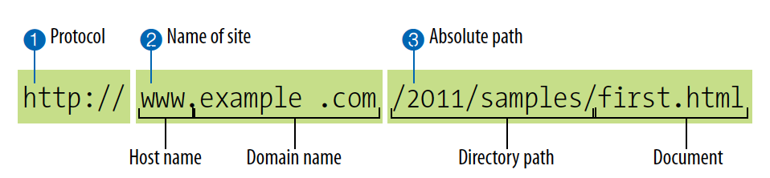
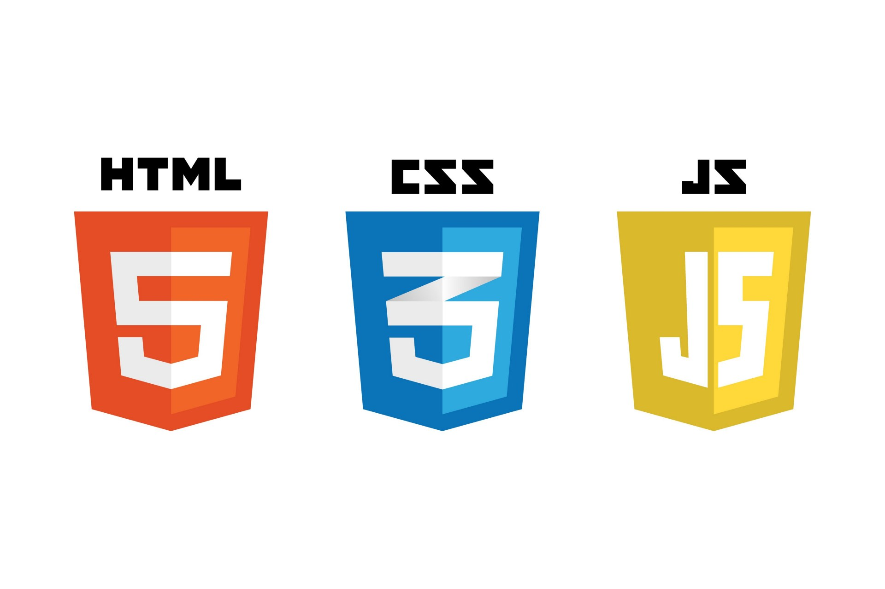
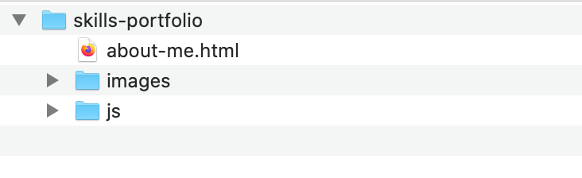
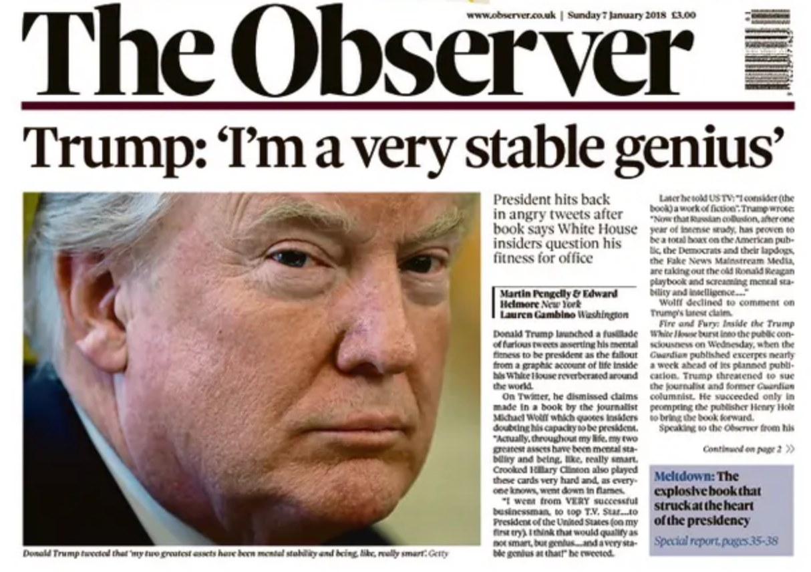
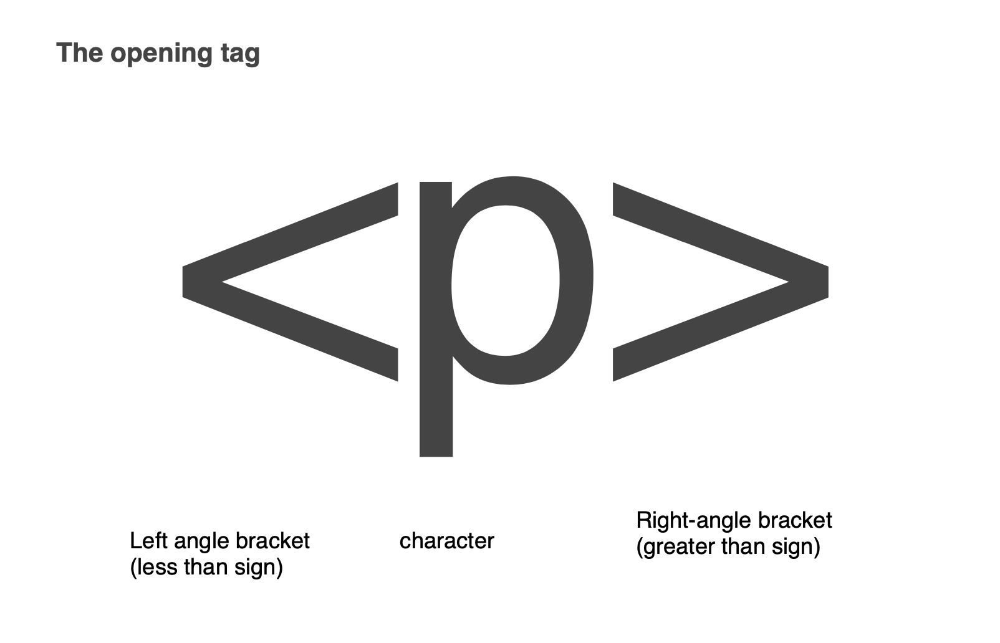
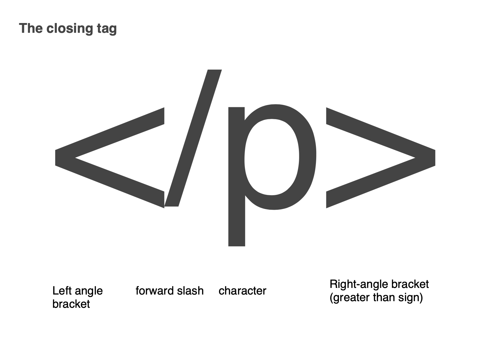
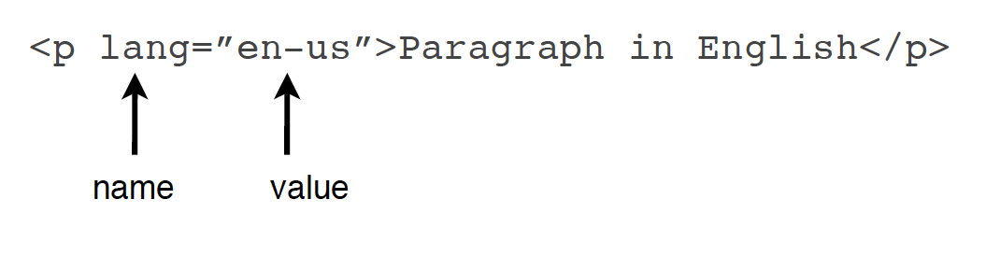
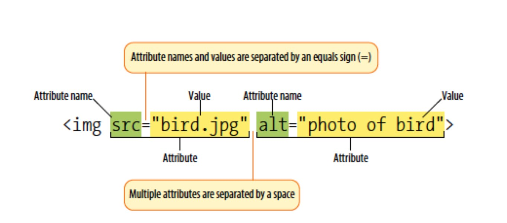

Welcome to Web Interaction, the first of the interactive modules on Content Creation. By the end of today you will have written a web page by hand, opened it in a browser, checked it with the same tool professionals use, and started the first piece of your portfolio.
Run sheet
- About the module, the assessment, and using AI tools honestly
- How the internet works, and the three languages of the web
- Getting set up: VS Code, CodePen and your portfolio folder
- Your first HTML document
- Headings, paragraphs and line breaks
- Break
- Emphasis, quotes and comments
- Giving the page a skeleton: header, main, footer
- Images
- Checking your work: the validator and dev tools
- Portfolio Task 1: a page about you
About the module
The Interactive theme
We have 5 core themes on Content Creation. Interactive is one of them. Your tutor will explain how this module fits with the interactive modules that follow. The module information and the assignment brief are on MyBeckett; we'll go through the assessment together now.
How you're assessed
One Skills Portfolio, worth 100%, uploaded in January and then presented online. It is made of four portfolio tasks: three small pages you build in the first five weeks (one is set today) and one larger website you design and build after Care Week. Each task is labelled "Portfolio Task" in the week it is set. All of them live in one folder on your computer, which you will create in a few minutes.
Using AI tools on this module
You will use ChatGPT, Copilot, Claude or something like them at some point this term. That's fine, within limits, and the limits are simple:
- Fine: asking it to explain an error, to explain a line of code you've been given, or to suggest why something isn't working. Treat it like a patient classmate.
- Not fine: asking it to write a portfolio task, or pasting in code you can't explain. In your presentation you will be asked to talk through your own code, line by line if necessary. Code you didn't write and don't understand shows immediately, and it counts as academic misconduct.
The brief asks for a short Generative AI statement with your upload saying what you used and what for. Keep a note as you go. The honest test: if you couldn't rebuild it without the tool, you haven't learnt it yet, and learning it is what you're here for.
How the internet works
Take some time to watch the first 4 minutes of the following video.

Now that you've watched it can you answer the following questions?
- In what year was the internet created?
- Who invented the World Wide Web?
- How proportion of the world are active internet users?
- How do we link up the internet across continents?
- People refer to the "internet" and the "web" to mean the same thing but there's a subtle difference. What is it?
Web Page Addresses (URL's)
Every page on the internet has its own address known as a URL. A URL is an abbreviation of Universal Resource Locator but I don't expect you to remember that.
Each URL can be broken down into certain sections of information like so

The holy trinity - how we build the web.

Most people have a vague idea that HTML is what is used to build web pages. However it forms just one of the 3 components that go together to build web pages and modern web applications. There are another 2 languages that go hand-in-hand with HTML to create the modern web experience. These are CSS and JavaScript. Let's look at what they each do.
HTML
HTML stands for Hypertext Markup Language. An HTML file contains all the content and dictates the structure of that content. If you were writing a news website the HTML file would contain the headings, the copy, the images and it would organise the content into a logical structure.
CSS
CSS stands for Cascading Style Sheets. We will cover the "cascade" in a later tutorial but the key word to focus on here is "Style". It takes the HTML and it presents it in a certain style. It's a bit like if you chose a template in a Powerpoint presentation. It takes content and might change the colours of headings, the fonts, the background colour of the page. In modern web pages it is also used to handle the layout of the page.
JavaScript
JavaScript adds interactivity to web pages. It acts on inputs from the user, it allows multimedia to work, it makes web pages less static and behave more like applications. JavaScript is a later module. This one is HTML and CSS, and you can build a great deal with just those two.
Let's get tooled up.....
There are 2 things you need to do to be able to engage with the tasks in this module.
- Create an account at Codepen.io (https://codepen.io)
- Install a decent text editor for writing your code. I recommend VS Code as it has become a bit of a standard in the industry. (https://code.visualstudio.com/)
Watch the following video for a tour of VS Code and the customisations that are worth making. You do not need to watch all of it in one go, the first 15 minutes cover everything you need to get started.

48 minutes · Coder Coder. Watch on YouTube
Your portfolio folder
Before you write any HTML, make the folder it will live in. Every portfolio task for the whole module goes in here, so do it properly once:
- Somewhere sensible (Documents, or your OneDrive), create a folder called skills-portfolio.
- Inside it, create a folder called images.
- In VS Code, choose File, then Open Folder, and open skills-portfolio. Every file you make this term is saved into it.

Naming rules, and they are rules
All lower case. No spaces. Use a hyphen where you
want a space: about-me.html, not
About Me.html. This goes for folders, HTML files and
every image you ever put on a page. Your laptop forgives
Photo 1.JPG; a web server does not, and in week 5
your work goes on a web server.
Your first HTML document
Any type of document that we come across in our everyday lives, be it a magazine, newspaper or bank statement has some kind of structure to it. A newspaper article may have a headline, some text, a main picture, and subheadings of various different weight for sections of the article. Structure is important to convey meaning and help people to navigate the document.

We can consider web pages to be just an electronic document that we view in a browser. It is HTML that defines the structure of a web page. It does this by marking-up pieces of content with tags.
Your First Complete HTML Document
Let's start by looking at what a complete HTML document looks like:
<!DOCTYPE html>
<html lang="en">
<head>
<meta charset="UTF-8">
<meta name="viewport" content="width=device-width, initial-scale=1.0">
<title>My First Webpage</title>
</head>
<body>
<h1>Welcome to My Website</h1>
<p>This is my first paragraph of content!</p>
</body>
</html>Try This Now!
Copy this code into a new CodePen and see it in action. This is the foundation that every webpage builds upon.
Don't worry about understanding every part yet - we'll break this down piece by piece throughout the tutorial.
Documents and Markup
If we had a section of text that is a paragraph in our document we can add Markup to say it is a paragraph. It would look like this
<p>This is my paragraph of text on my
website....</p>
If we wanted a main heading we would Markup the heading text with heading tags, e.g.
<h1>This is the main heading</h1>
The third letter in HTML stands for Markup and all it is is looking at your content, deciding what it is and adding some tags to it so the browser knows what it is. The browser will have some built-in styles to display your paragraph or heading how it thinks but we generally use CSS to display these items exactly as we want.
Tags
HTML uses tags to markup content. Most content is marked up with an opening tag and a closing tag. This opening tag, the content and then the closing tag is known as an HTML element.
There are some HTML elements that don't have a closing tag though. We will cover a handful of these below and more in the weeks to come.


Additional information
Occasionally some extra information is added to a tag to help explain the content better. This information consists of a name and value separated by an equals sign. An example of this is below.


<!DOCTYPE html>
<html lang="en">
<head>
<meta charset="UTF-8">
<meta name="viewport" content="width=device-width, initial-scale=1.0">
<title>Document</title>
</head>
<body>
</body>
</html>Headings, paragraphs and line breaks
Headings
There are 6 levels of headings tags in HTML. They all start with the character h and then have a number after them.
<h1>Heading Level 1</h1>
<h2>Heading Level 2</h2>
<h3>Heading Level 3</h3>
<h4>Heading Level 4</h4>
<h5>Heading Level 5</h5>
<h6>Heading Level 6</h6>Heading Level 1
Heading Level 2
Heading Level 3
Heading Level 4
Heading Level 5
Heading Level 6
<h1> should be used for the most important heading on the page. <h6> for the least.
All opening tags have a closing tag. Browsers have default behaviour to display the lower numbers bigger and bolder than the higher numbers. You can have multiple headings of the same number on the same page but it is bad practice to have many <h1> tags - as a rule a page will have one main heading.
Click to see example of how headings appear in the browser
Headings are extremely important for search engine rankings and also in structuring the hierarchy of content.
Paragraphs
The p element is used to break up text into logical blocks and is short for paragraph. All we need to do to write a paragraph is to wrap text in an opening <p> tag and then end it with a corresponding </p> tag.
<p>This is my first paragraph of text.</p>
<p>This is my second paragraph of text.</p>
<p>This is my third paragraph of text.</p>This is my first paragraph of text.
This is my second paragraph of text.
This is my third paragraph of text.
No capital letters
Now might be a good time to say that you should never use capital letters in tag names. It won't break anything but it's bad form. So no <H2>'s or <P>'s it's definitely <h2>'s and <p>'s please!
Line breaks
Text will keep being added to a single line unless a <p></p> element is used or we use a <br> (line-break) tag.
The <br> element does not have a closing tag associated with it. Elements such as this are called self-closing elements. The difference between this and using a paragraph tag is that with only one tag there is nothing to wrap the tag around. A paragraph will add vertical white space above and below it. A <br> tag will simply start a new line directly below.
They are useful for writing items such as addresses.
With line breaks:
John Smith<br>
123 Main Street<br>
Anytown<br>
AB1 2CD123 Main Street
Anytown
AB1 2CD
Without line breaks:
John Smith
123 Main Street
Anytown
AB1 2CDAnd this is an important point to remember! White space in your code gets completely ignored by your browser.
How can we use this to our advantage?
Exercise 1 - Marking up contentBreak
Halfway
After the break: a few more text elements, a skeleton for the page, images, and how to check your work.
Emphasis, quotes and comments
Emphasis and Strong elements
The em element is short for emphasis. If we wrap a <em> and </em> tag around a phrase the default browser behaviour is to put the word in italics.
If we wrap a <strong> and </strong> tag around a phrase the default browser behaviour is to put the word in bold.
HTML also has bold <b> and italic <i> tags but it is generally regarded to be better to use <strong> and <em> as these imply meaning (semantics) rather than styling which is traditionally the role of CSS.
<p>This text has <em>emphasis</em> in it.</p>
<p>This text has <strong>strong</strong> importance.</p>
<p>You can even <em><strong>combine them</strong></em>.</p>This text has emphasis in it.
This text has strong importance.
You can even combine them.
Quotations and Block Quotes
There are two tags associated with quotations. The blockquote is used for longer quotations and whitespace is inserted around the quotation.
The q element is used for shorter quotations and quotation marks are added to the quote.
<p>As Shakespeare said, <q>To be or not to be</q>.</p>
<blockquote>
<p>The only way to do great work is to love what you do. If you haven't found it yet, keep looking. Don't settle.</p>
</blockquote>As Shakespeare said, To be or not to be
.
The only way to do great work is to love what you do. If you haven't found it yet, keep looking. Don't settle.
Adding comments to our code
The comment tag is used to insert comments in the source code. Comments are not displayed in the browsers.
You can use comments to explain your code, which can help you when you edit the source code at a later date. This is especially useful if you have a lot of code.
A comment starts with a <!-- and it ends with a -->
<!-- This is a comment and won't appear on the page -->
<h1>Welcome to my website</h1>
<!-- TODO: Add more content here later -->
<p>This paragraph will appear on the page.</p>
<!--
<p>This paragraph is commented out and hidden</p>
-->Welcome to my website
This paragraph will appear on the page.
The sign of a really professional web developer is one who takes the time to add in comments.
We can also use comments to hide sections of code in the browser if you are still working on them.
Giving the page a skeleton
Most web pages have the same broad shape: something at the top with
the site's name and menu, the actual content, and something at the
bottom with the small print. HTML has elements for each of these.
They are called landmarks, and they go inside
<body>:
<body>
<header>
<h1>Sam Patel</h1>
<nav>
<!-- links to other pages will go here next week -->
</nav>
</header>
<main>
<h2>About me</h2>
<p>All of the page's real content goes in main.</p>
</main>
<footer>
<p>Made by Sam Patel, September 2026</p>
</footer>
</body>- <header> is the top of the page: the site name, a logo, and the navigation.
- <nav> holds the main menu of links. It's empty today; next week it fills up.
- <main> holds the content that is unique to this page. One per page.
- <footer> is the bottom: credits, copyright, contact details.
On screen, right now, these make no visible difference. They matter
for two reasons. A screen reader lets a blind user jump straight to
main instead of listening to the menu on every page. And
when we start CSS, "make the header dark blue" is one line if there
is a header element and a mess if there isn't. Use them from your
very first page and they become automatic.
Images
Now you know how to mark-up text we can add some images. We do this in HTML by using the <img> element. We will cover images again next week in a bit more depth; for now, the element itself.
The img element
Like the <br> tag, the image tag is another self-closing element. It has no closing tag. It does have 2 attributes that it must be given though - these are the src attribute and the alt attribute.
The src attribute is the location of the image file relative to the location of the HTML file. Your tutor will explain what this means.
The alt attribute is a description of what the image is. Typically this is what a screen-reader would read-out for people with visual impairments. It is also used by search engines to recognise the content of your images. An example of an image tag is shown below

(above image from Learning Web Design, Robbins (2012))
Exercise 2 - Adding images to a pageChecking your work
Browsers are forgiving. Leave a tag open and the page usually still appears, which sounds kind but means you don't find out about the mistake until it breaks something three weeks later. Two tools tell you the truth.
The validator
The W3C Markup Validator reads your HTML and lists everything that is wrong with it, with line numbers. Choose the "Validate by direct input" tab, paste in your whole file, and press Check. Green means clean. Do this before you call any page finished, every week, for the rest of the module. Your tutor will.
Dev tools
Every browser has developer tools built in. Right-click anything on a page and choose Inspect. The panel that opens shows the HTML the browser actually built from your file, so if you forgot a closing tag you can see what the browser guessed. Try it on this page now; next week we'll spend proper time in there.
Common mistakes
Missing closing tags: every opening tag needs a closing tag, except the empty ones like <br> and <img>.
Tags closed in the wrong order: close them in reverse order to how you opened them.
Typos in tag names: <pargraph> isn't an element. It's <p>.
Capital letters or spaces in file names: see the rules above. The validator won't catch these; the web server will.
<p><strong>Bold text</p></strong>
Portfolio Task 1: a page about you
Put everything from today into a web page about yourself. This is the first piece of your skills portfolio. It doesn't need to be long, and it doesn't need to look pretty yet: nothing does until week 3. It needs to be correct.
Requirements
-
File: saved as
about-me.htmlin your skills-portfolio folder, with any pictures in the images folder. -
Document structure: the complete template from
earlier, including the
title, and inside the body aheader,mainandfooter. -
Headings: one
h1with your name, and at least twoh2sections. -
Content: paragraphs about you, using
em,strongand ablockquotewhere they mean something. -
An image: at least one, with an
altthat describes it. - A comment in the code saying what the page is and when you made it.
- Validated. Paste it into the validator and fix what it finds.
Content ideas
- Where you're from and what brought you to this course
- Things you make, play, watch or collect
- Places you've been or want to go
- What you'd like to be doing in five years
- Skills you're learning or want to learn